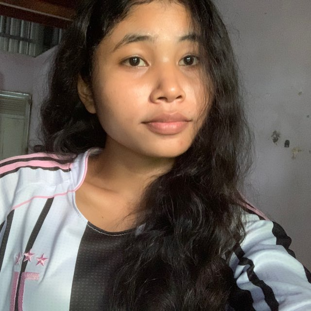

"មានអារម្មណ៍ខ្លះ... ដែលមិនអាចលាក់ទុកក្នុងបេះដូងបានទៀតឡើយ។"
រាល់ទង្វើ និងភាពស្រស់ស្អាតរបស់អូនដែលដក់ជាប់ក្នុងចិត្តរបស់បង
ស្នាមញញឹមរបស់អូនប្រៀបដូចជាពន្លឺព្រះអាទិត្យដ៏ទន់ភ្លន់ ដែលអាចរំលាយរាល់ភាពសោកសៅក្នុងបេះដូងរបស់បង។ រាល់ពេលដែលបានឃើញអូនញញឹម វាគឺជាពេលវេលាដ៏មានតម្លៃបំផុត។
ភាពស្លូតបូត និងចិត្តគំនិតដ៏ល្អបរិសុទ្ធរបស់អូនធ្វើឱ្យមនុស្សគ្រប់គ្នាដែលនៅក្បែរមានអារម្មណ៍កក់ក្តៅ និងមានសេចក្តីសុខ។ ភាពទន់ភ្លន់របស់អូនធ្វើឱ្យចិត្តបងចង់ថែរក្សាក្បែរមិនឃ្លាតឡើយ។
ទោះបីជាអតីតកាលបន្សល់ទុកនូវស្នាមរបួស និងការលំបាកយ៉ាងណាក៏ដោយ ក៏អូននៅតែរឹងមាំ និងដើរទៅមុខដោយស្នាមញញឹម។ ភាពអត់ធ្មត់របស់អូនគឺជាអ្វីដែលបងគោរពបំផុត។
វត្តមានរបស់អូនបង្រៀនឱ្យបងយល់ច្បាស់ពីន័យពិតនៃសេចក្តីស្រឡាញ់។ គឺការចេះផ្តល់ឱ្យ ការរង់ចាំដោយអត់ធ្មត់ ការបារម្ភពិតប្រាកដ និងការចង់ឃើញមនុស្សដែលយើងស្រឡាញ់មានក្តីសុខ។
ដំណើរនៃការព្យាបាល និងការចាប់ផ្តើមថ្មី
ទំព័រជីវិតដែលធ្លាប់ជួបប្រទះការខកចិត្ត និងការឈឺចាប់ជាច្រើនលើកដែលបន្សល់ទុកនូវការភ័យខ្លាច។
បេះដូងដែលនៅតែមានភាពភ័យខ្លាច ខ្លាចការលះបង់ និងការចាប់ផ្តើមជាថ្មីដែលនាំមកនូវការខកចិត្តម្តងទៀត។
បងនឹងមិនបង្ខំឡើយ។ បងចង់ឱ្យពេលវេលា និងភាពស្មោះត្រង់របស់បងធ្វើជាថ្នាំព្យាបាលថ្នមៗដល់បេះដូងអូន។
សង្ឃឹមថានឹងឃើញស្នាមញញឹមដ៏បរិសុទ្ធដោយគ្មានការលាក់លៀមការឈឺចាប់តទៅទៀត។
នៅពេលណាដែលអូនមានភាពជឿជាក់ និងរួចរាល់... បេះដូងថ្មីនឹងបើកទទួលយកពន្លឺដ៏ស្រស់បំព្រង។
"បងមិនចង់លុបអតីតកាលរបស់អូនទេ... បងគ្រាន់តែសង្ឃឹមថា ថ្ងៃណាមួយ បងអាចក្លាយជាផ្នែកមួយនៃអនាគតរបស់អូន។"
សេចក្តីស្មោះស្ម័គ្រ និងស្ថិរភាពដែលបងផ្ដល់ជូនអូន
បងយល់ច្បាស់ថាការបង្ខំមិនអាចនាំមកនូវស្នេហាពិតទេ។ បងសប្បាយចិត្តនឹងដើរតាមដំណើរនៃបេះដូងរបស់អូនជានិច្ច។
ទោះជាថ្ងៃមុខទៅជាយ៉ាងណា ការសម្រេចចិត្តរបស់អូនជាធំជានិច្ច។ សេចក្តីសុខផ្លូវចិត្តរបស់អូនសំខាន់ជាងអ្វីៗទាំងអស់។
ចិត្តមួយថ្លើមមួយរបស់បងមិនប្រែប្រួលឡើយ។ បងចង់ឱ្យអូនដឹងថាយ៉ាងហោចណាស់មានបងម្នាក់ដែលនៅក្បែរអូន។
សុភមង្គល និងស្នាមញញឹមរបស់អូនជាគោលបំណងចម្បងបង្អស់របស់បង ទោះបីជាពេលខ្លះបងគ្រាន់តែជាអ្នកមើលពីចម្ងាយក្តី។
រាល់អនុស្សាវរីយ៍តូចៗដែលបានឆ្លងកាត់

ចាប់តាំងពីថ្ងៃដំបូងដែលក្តីស្រឡាញ់បានកើតឡើង និងបន្តកើនឡើងជានិច្ច
Lanh...
បើថ្ងៃណាមួយ បេះដូងរបស់អូនលែងភ័យខ្លាច ហើយអូនសម្រេចចិត្តបើកទ្វារបេះដូងម្តងទៀត...
បងសង្ឃឹមថា មនុស្សដែលអូននឹកឃើញមុនគេ គឺជារូបបង។
តែបើថ្ងៃនោះមិនមកដល់ទេ បងក៏មិនដែលស្តាយក្រោយដែលបានស្រឡាញ់អូននោះដែរ។
ព្រោះស្នេហាពិត មិនមែនជាការខំប្រឹងដើម្បីកាន់កាប់មនុស្សដែលយើងស្រឡាញ់តែម្នាក់ឯងនោះទេ... ប៉ុន្តែជាការជូនពរឱ្យគេមានសេចក្ដីសុខ និងទទួលបានស្នាមញញឹមដ៏ពិតប្រាកដ ទោះបីជាថ្ងៃនោះគេមិនបានជ្រើសរើសយើងជាអ្នករួមដំណើរជាមួយក៏ដោយ។
អរគុណដែលបានធ្វើឱ្យបេះដូងរបស់បងរៀនស្គាល់ និងរៀនស្រឡាញ់នរណាម្នាក់ដោយភាពស្មោះត្រង់បំផុត។